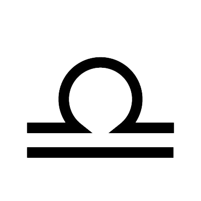

SIGNO LIBRA

Características
Sociável e charmoso.
Justo e equilibrado.
Indeciso e evita confrontos.
Elemento - Ar
Representa o ar em sua forma mais equilibrada e harmoniosa. Libra busca relações equilibradas, justiça e estética.
Planeta regente
Vênus, o mesmo planeta de Touro, destaca o amor, a beleza e a harmonia em Libra. Também simboliza a busca por relacionamentos equilibrados e justiça.